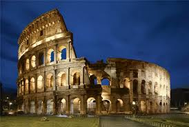

COLISEO ROMANO

El Coliseo o Anfiteatro Flavio ? es un anfiteatro de la época del Imperio romano, construido en el siglo I. Está ubicado en el este del Foro Romano, y fue el más grande de los que se construyeron en el Imperio romano